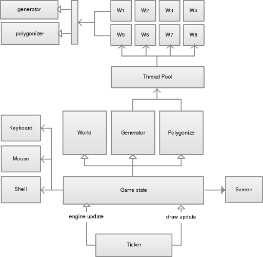
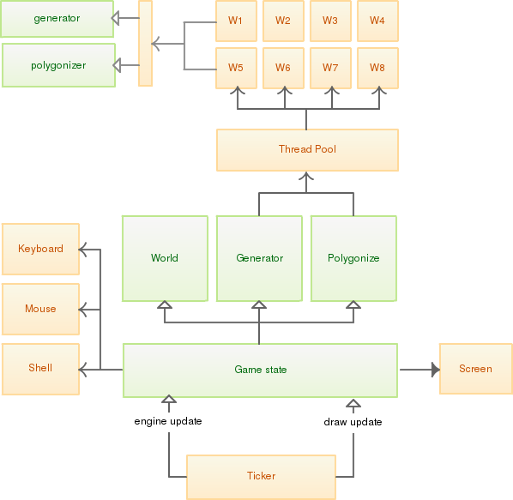
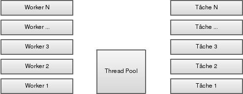
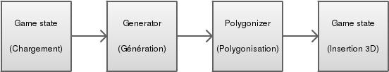
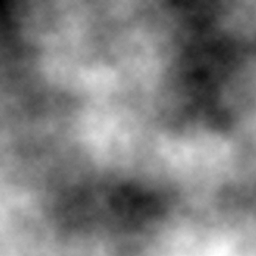

Conception
Conception ... avec SWAT

Concept: Thread pool

-
Les tâches sont empilées
-
Dès qu'un worker est 'au repos', on lui confie la tâche
-
Il travaille dessus, et nous notifie le résultat quand il a fini
-
Après quoi il passe à la prochaine tâche disponible
Workflow de génération
-
Le game state charge les régions à proximité
-
Il demande au générateur de créer celles qui n'existent pas
-
Le générateur créé une nouvelle task dans la pool pour chaque région
-
Une fois la task finie, le polygonizer la catch et créé une nouvelle task
-
La polygonisation finie, le game state injecte le modèle

Concept: Bruit de perlin

-
Aléatoire
-
Mais pas trop
-
Permet de générer des valeurs cohérentes à l'échelle d'un monde
Génération d'une région
- Pour chaque X
- Pour chaque Y
- Pour chaque Z
- Calcul de trois bruits de perlin :
- roughness
- detail
- elevation
- On les combine, et applique un facteur sur la hauteur
- En fonction de l'unique valeur obtenue :
- Si dans l'intervalle [0;A[, le bloc est DIRT
- Si dans l'intervalle ]A;B[, le bloc est GRASS
- Si dans l'intervalle [C;1[, le bloc est AIR, ou WATER (niveau de la mer)
Génération d'une région : soucis actuels
-
Relativement lent (de une demie seconde à une seconde par région)
-
Géologiquement curieux, par moment (plate-formes volantes ?)
-
Pas de structures (arbres, maisons, etc)
-
Pas de caves
Polygonisation d'une région
Pas rentrer dans les détails, cf article de Paul Bourke sur le sujet.
Dans les grandes lignes, on récupère huit valeurs à partir d'un unique voxel. En fonction de ces valeurs, on extrait les faces à afficher.

Le procédé se nomme Marching Cubes.
Quelques modifications personnalisées à l'algorithme pour des cas supplémentaires.
Polygonisation d'une région : soucis actuels
-
Particulièrement lent (jusqu'à 4s pour polygoniser une région)
-
Génère beaucoup de polygones (beaucoup plus que dans Minecraft)
-
Soucis sur l'UV mapping des faces
Notes de développement
Performances
-
Trop de workers tuent les perfs du thread principal.
-
L'utilisation des transferable objects n'est pas négligeable, et à moindre coût.
-
Dans le cas de Three.js, utiliser des BufferGeometry est une bonne idée.
-
Firefox est toujours très à la traine par rapport à Chrome en terme de performances.
Futur
-
On veut WebCL ! Cela permettrait d'hautement paralléliser la génération des régions, et potentiellement leur polygonisation.
-
La Pointer Lock API est bien faite. Mais Firefox requiert d'être en fullscreen.
-
Curieux de voir si Asm.js améliorerait les performances de la génération / polygonisation, à défaut de WebCL.
A venir
-
Du son !
-
Rayon de collision.
-
Un monde plus joli.
-
Un meilleur texturage.
-
Des armes pour tout casser.
-
Etc, etc, etc
Merci !
A bientôt sur Twitter ? :)